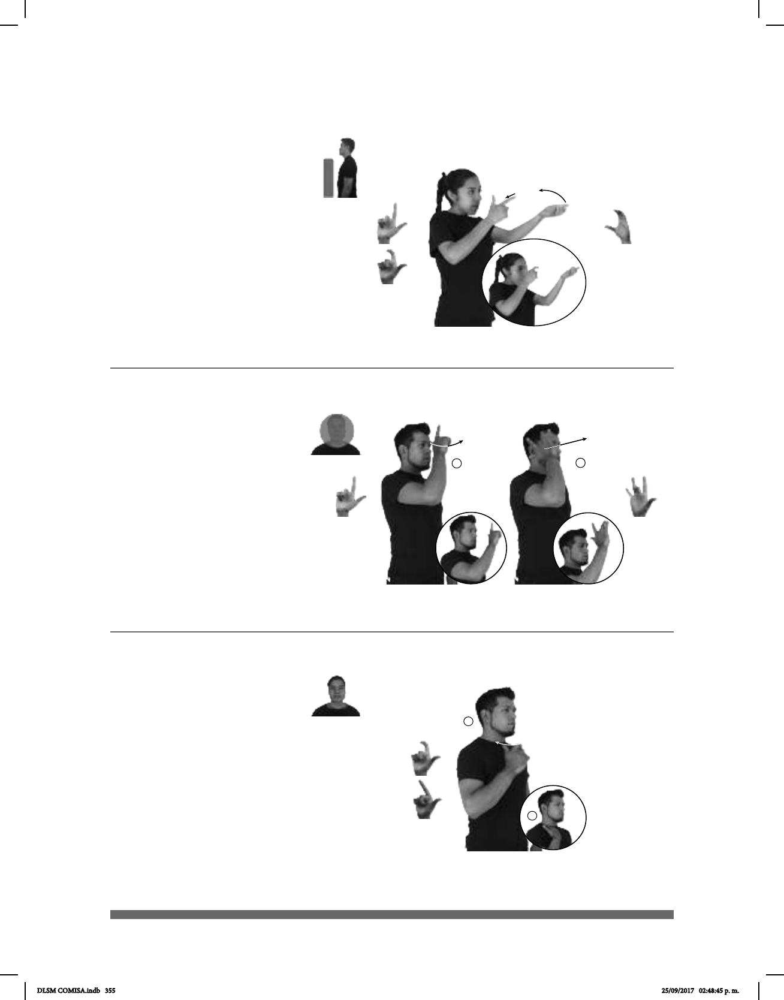

355
Ex- (L-45)
Seña: SB
MD seña que pasa de L.1 a
L.10, MB C.1
MD palma hacia la izquierda.
MB palma hacia arriba.
MD y MB a la altura de la cara.
El dedo índice de MD se
retrae.
Se emite un click.
Simula la acción de
disparar con una escopeta.
1. sust. f. Arma de fuego portátil
con uno o dos cañones que dispara cartuchos
o perdigones y suele utilizarse para cazar. 2.
sust. m. Arma de fuego provista de un cañón
largo y acanalado por dentro que se dispara
apoyándola en el hombro. 3. sust. m. Cada
una de las especialidades deportivas que
consisten en disparar con distintos tipos de
arma sobre determinados blancos.
Seña: SM
Seña que pasa de
L.10 a L.6
La palma inicia
hacia la izquierda y termina hacia
adentro.
La mano inicia a la
altura del pecho y termina sobre el
pecho.
La muñeca gira y
cambia la orientación de la mano.
y ha dejado de serlo’.
Seña: SC: I. y II. SM
I. L.1; II.
I. y II. Palma hacia la
izquierda.
I. Sobre la frente; II.
Sobre la sien.
I. y II. Recto hacia
enfrente.
sust. m. Tercera perso-
na de la Santísima Trinidad.
(L-44)
1
/
2
(L-43)
pos-MI ABUELO TENER RIFLE VIEJO
pro-YO CREER ESPÍRITU SANTO
Yo creo en el Espíritu Santo.
pro-ÉL pos-MI EX NOVIO
Él es mi ex novio.
DLSM COMISA.indb 355 25/09/2017 02:48:45 p. m.